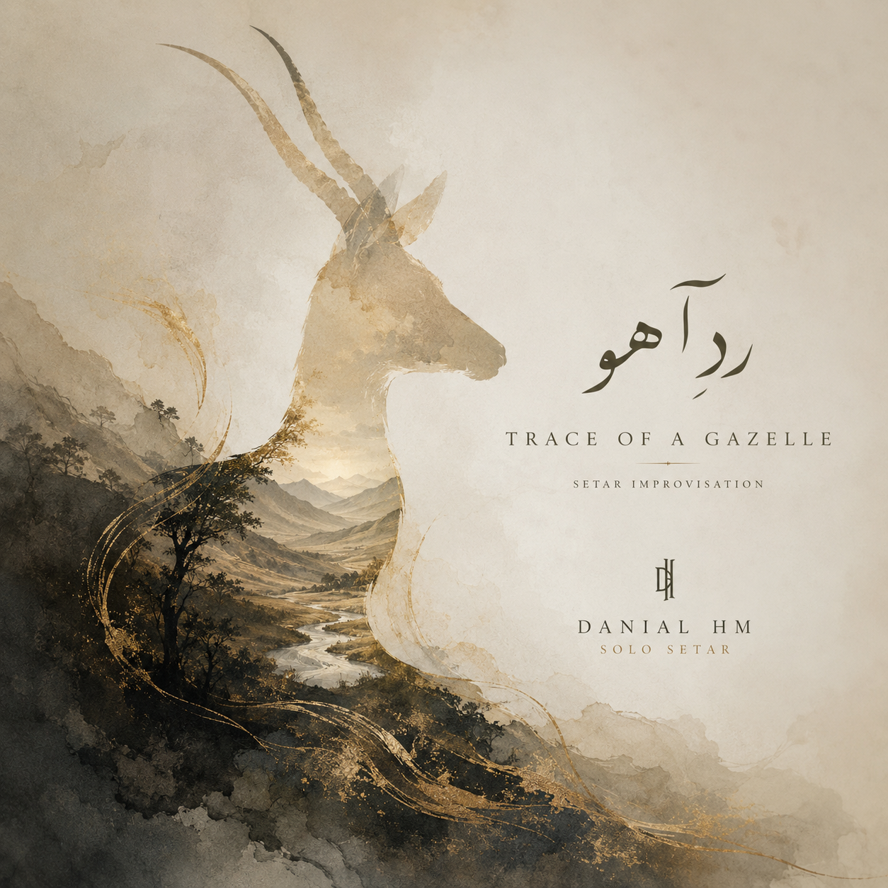

IRANIAN ARTIST · BASED IN AUSTRIA
Music for the spaces between sound and silence.
Danial HM is a composer and Persian setar artist creating intimate, cinematic and contemplative music. His work brings Persian musical memory into a contemporary language shaped by restraint, resonance and attentive listening.

LATEST RELEASE
Improvisation as a form of attentive presence.
Trace of a Gazelle
A solo Persian setar improvisation that allows sound, silence and emotional movement to remain equally present. The composition unfolds without a calculated climax, following the natural logic of one phrase giving birth to the next.
PRESS
The music continues to travel.
Silence becomes the protagonist.
A feature on the setar, natural improvisation and the emotional role of silence in Trace of a Gazelle.
Read feature ↗ Electroctopus · MexicoA few minutes of reflection.
A review describing the piece as a calm and immersive listening space for the mind to slow down.
Read review ↗ NewFire Magazine · July 20, 2026Power in the spaces between sound.
NewFire Magazine highlights the patience, restraint and meditative use of silence in Trace of a Gazelle.
Read feature ↗